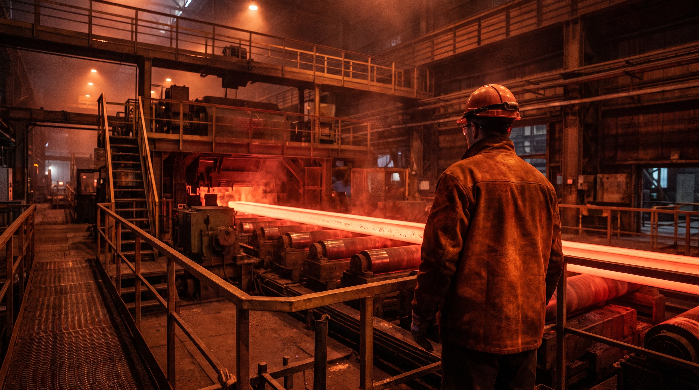

Environnement & qualité
La confiance se contrôle.
Notre système
La qualité est une chaîne, pas une étape.
Nos produits sont soumis à des contrôles exigeants. Leur marquage est un gage de sécurité et de reconnaissance en tant que produit de qualité.
Les preuves
Chaque lot est suivi de près.
01Contrôle de la régularité
02Contrôle de la masse linéique
03Marquage et traçabilité
04Conformité produit
Certifications